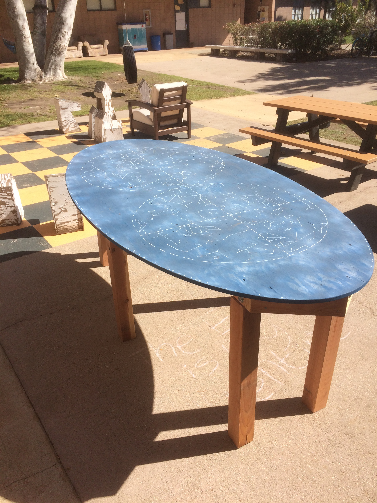
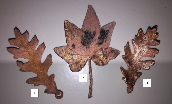
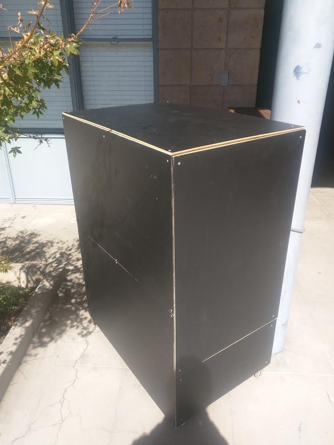
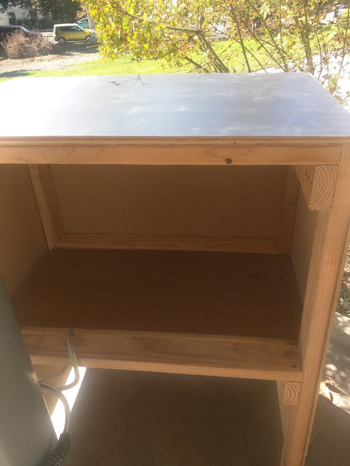

2018 Spring
South Table by Andrew Bishop, Elizabeth Poss and Nancy Wei
Many games played around tables at South involve students in standing in a circle. This is a problem because all of the tables have corners, and players at the corner are usually at a disadvantage. Andrew Bishop, Elizabeth Poss and Nancy Wei designed and built a table to solve this problem. For a detailed description, see here.

Biometric Lock by Jenny Smith
Jenny Smith wanted to make a biometric lock because she can never find her key and is alwasy carrying things when she walks up to her door. THe final product looks awesome. For a detailed description, see here.

Copper Electroplating by Kathryn Chan
Kathryn Chan was inspired to do this project from the jewelry made by Enchanted Leaves, and used their resources page as a guide. She collected leaves from around the campus, and electroplated them. The final results look amazing! For a detailed description, see here.

Cute Compute Cluster by Kalani Duran, Adam Grobman, Katharine Larsen and Kaveh Pezeshki
The goal of this project was to provide the team with a simple physical distributed computing platform for education. They wanted experience writing algorithms that can take advantage of multiple cores over a (very) slow interconnect. Additionally, it provided experience with surface-mount soldering, as the board included tight-pitch QFP ICs as well as many 0402 capacitors and resistors. For a detailed project description, see here.

2017 Fall
Mirror by Valerie Kwee
Valerie made a mirror with dynamic LED lighting during the summer. She used a circular saw to cut the wood base and used cement glue to attach smaller blocks of wood to frame an octagonal mirror. She lined the smaller blocks with an LED strip, then cut out an acrylic sheet the same size as the wood base and lined it with a one-way mirror sticker. Then she used glued the sheet to the wood frame parallel to the mirror, about 1 inch away.
Portable Gas Stove for Use With a Wok by Ryan Gibbs
Ryan modified a portable gas stove so that it can be used with a wok efficiently. Ryan made a flame focus ring using stainless steel pastry rings he purchased online. For a complete description, see here.

EDC by Ben Baral
Ben built a bar for his dorm using more than 30 feet of 2x4s, some plywood, caster wheels, and chalkboard panels from Lowe's. The only tools used were a chop saw, a cordless drill, and a table saw. First, he made the frame by cutting consistent lengths of wood on the chop saw, then he drilled the frame together, then he cut the panels to size and attached them. It's pretty sturdy, though not completely square due to warp in the 2x4s.

